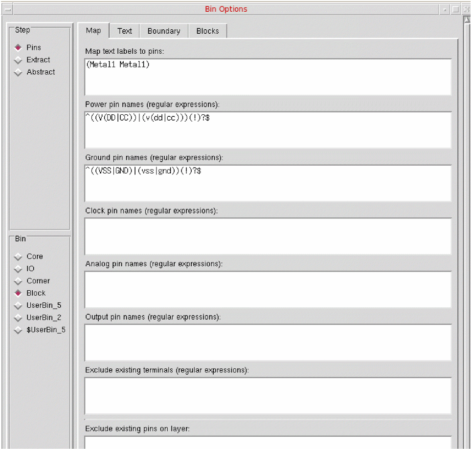

Setting Bin Options in Abstract Generator
The Bin Options form allows you to view and change the options associated with system and user bins. These options control the way in which Abstract Generator processes the cells contained in any given bin.
-
Choose Bins – Options to open the Bin Options form.
When you run flow steps on selected cells, you see a modified version of the Bin Options form, which lets you view and change options relevant to the steps about to be run. -
In the Bin Selector section, use the option settings are applied to the bin specified in the panel on the left of the form.
If there is a bin selected when you open the form, it will be selected here with the option settings for that bin displayed. If there are multiple bins selected, the first bin in the list is selected. You can view and change the options associated with any other bin by clicking the button next to the bin name. -
In the Step Selector section, you can access the options associated with each step in the top left of the Bins Options form. The abstract generation flow is split into four steps: Pins, Extract, and Abstract.
When you open the Bin Options form, the default selection is Pins. Use the buttons to view and modify options associated with the other steps. -
Use the options associated with each flow step are further grouped into logical categories, accessed by clicking the appropriate tab at the top.
When setting options, consider the following rules:- Measurements: All options that take measurements, for example for coordinates or distances, are specified in μ.
- Layers: Where an option takes a layer name, the name supplied must be defined in the technology file; otherwise, the entry is rejected and an error is generated when you try to move from the field in question.
- Purpose: Only purposes defined in the technology file are valid.
-
Select Copy From Bin to copy option settings from another bin to the selected bin. This is useful when creating a new user bin; you can selectively copy bin specific options only while copying options from one bin to another.
-
Click the Copy From Bin button to open the Copy Bin Options form.
- In the From field, select the bin whose options you want to copy and click OK. For example, the settings for the Core bin could be copied to UserBin.
- The current bin is entered automatically in the To field.
This function overwrites all the current option settings for the target bin. -
Click the Copy From Bin button to open the Copy Bin Options form.
- Click OK.
Related Topics
Guidelines for Bin Options Form
Return to top